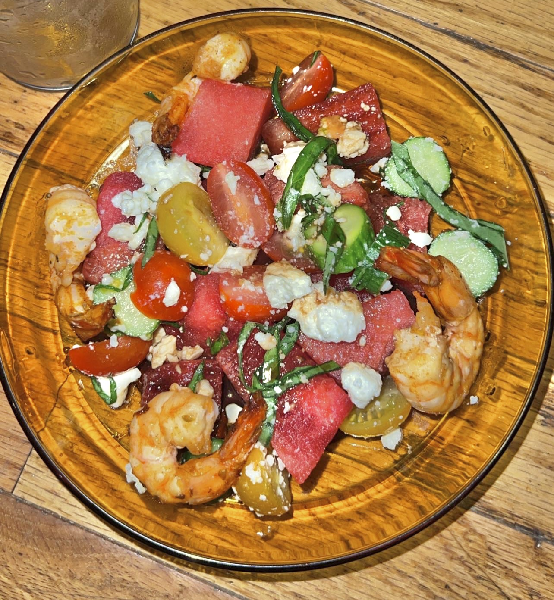

Shrimp and Watermelon Salad

Description
This is the perfect light salad which will leave you refreshed and
energized! Complete with cherry tomatoes, feta, cucumbers,
and a balsamic dressing this dish is perfect for summer. This recipe
will take you through all the steps necessary, including cooking the
shrimp to perfection with the ideal marinade. This recipe is for one serving
so size up accordingly!
Ingredients
Salad
- 4-5 large peeled and deveined shrimp
- 5-8 large watermelon cubes
- 1 cocktail cucumber, thinly sliced
- 4-5 cherry tomatoes, halved
- handful feta cheese
- thinly sliced basil
Dressing
- balsamic vinegar
- extra virgin olive oil
Shrimp Marinade
- 2 tbs sesame oil
- 1 tbs olive oil
- 1/2 lime juice
- 2 tsp cajun seasoning
Steps
- Combine sesame oil, olive oil, lime juice, and cajun
seasoning and marinate shrimp for 30 min to 1 hour in the fridge.
Do not let the shrimp marinate for more than 1 hour as the acids will
start cooking the shrimp!
- Combine slices of cocktail cucumber, basil, feta, and cherry tomatoes,
and mix in a bowl. Pro tip for thinly sliced basil: roll basil leaves
up and then slice.
- Fry shrimp on medium-high heat for 2 minutes on each side.
- Plate mixed salad and watermelon cubes
- Drizzle balsamic vinegar and extra virgin olive oil to taste
- Plate shrimp and enjoy!
Back to Top
Recipes Homepage